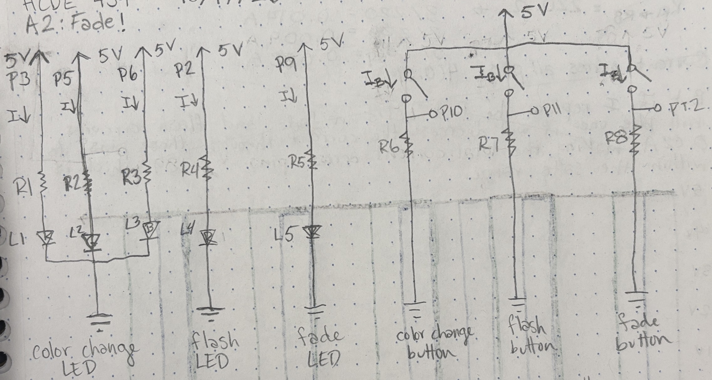
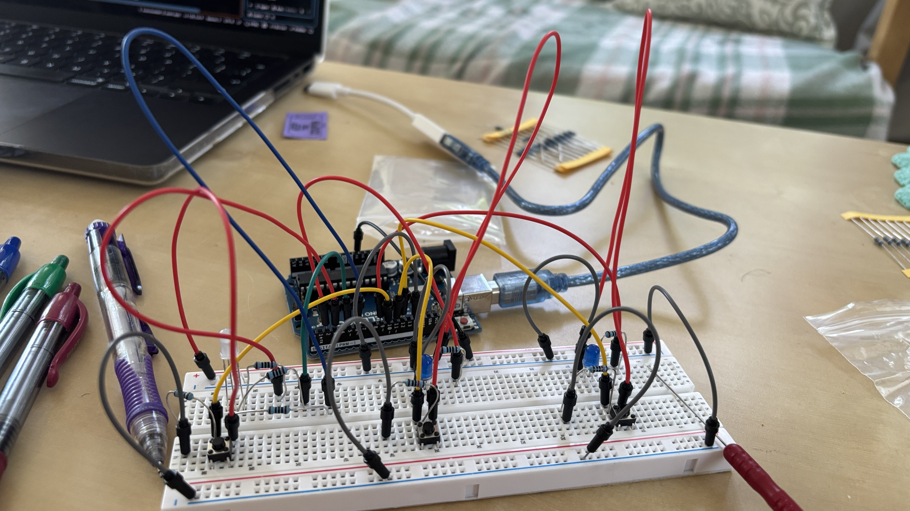
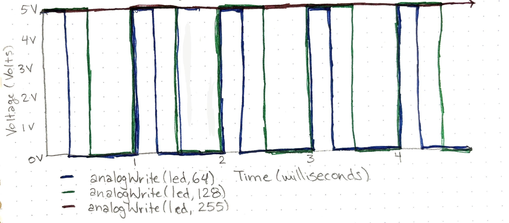

Vivian's Assignment 2!
Here is all the documentation for assignment 2!
Schematic

I made a diagram for each circuit and calculated the resistor values.
Resistor choices

I calculated the necessary resistance for each LED.

I decided to use 10k ohm resistors for the button circuits because they have no load in the circuit so there is no reason to pull unnecessary current from the Arduino.
Then I I made sure the current would be within safe limits if I used 100 ohm resistors for all the LED circuits because I did not have any 150 ohm resistors.

Code
//establishes 3 as with the name RED_RGB, to be used to refer to pin 3
const int RED_RGB = 3;
//establishes 5 as with the name GREEN_RGB, to be used to refer to pin 5
const int GREEN_RGB = 5;
//establishes 6 as with the name BLUE_RGB, to be used to refer to pin 6
const int BLUE_RGB = 6;
//establishes 2 as with the name BLUE_flash, to be used to refer to pin 2
const int BLUE_flash = 2;
//establishes 9 as with the name BLUE_fade, to be used to refer to pin 9
const int BLUE_fade = 9;
//establishes 10 as with the name SENSOR_RGB, to be used to refer to pin 10
const int SENSOR_RGB = 10;
//establishes 11 as with the name SENSOR_flash, to be used to refer to pin 11
const int SENSOR_flash = 11;
//establishes 12 as with the name SENSOR_fade, to be used to refer to pin 12
const int SENSOR_fade = 12;
//Code run only once when the arduino is first powered on
void setup() {
//establishes the pin named RED_RGB as an output for voltage
pinMode(RED_RGB, OUTPUT);
//establishes the pin named GREEN_RGB as an output for voltage
pinMode(GREEN_RGB, OUTPUT);
//establishes the pin named BLUE_RGB as an output for voltage
pinMode(BLUE_RGB, OUTPUT);
//establishes the pin named BLUE_flash as an output for voltage
pinMode(BLUE_flash, OUTPUT);
//establishes the pin named BLUE_fade as an output for voltage
pinMode(BLUE_fade, OUTPUT);
//establishes the pin named SENSOR_RGB as an input for reading voltage
pinMode(SENSOR_RGB, INPUT);
//establishes the pin named SENSOR_flash as an input for reading voltage
pinMode(SENSOR_flash, INPUT);
//establishes the pin named SENSOR_fade as an input for reading voltage
pinMode(SENSOR_fade, INPUT);
}
// the loop function runs over and over again forever while arduino is powered on
void loop() {
//detects if the RGB button has been pressed
if(digitalRead(SENSOR_RGB) == HIGH){
//creates a for loop where the analog output starts at 0, increments by 5, and stops at 255
for (int fadeValue = 0; fadeValue <= 255; fadeValue += 5) {
//tells the RED_RGB pin to send out the appropriate pattern of voltage associated with the current fadeValue as determined by the for loop structure
analogWrite(RED_RGB, fadeValue);
//waits 30 milliseconds so the fading process is slow enough to be percievable
delay(30);
}
//creates a for loop where the analog output starts at 0, increments by 5, and stops at 255
for (int fadeValue = 0; fadeValue <= 255; fadeValue += 5) {
//tells the BLUE_RGB pin to send out the appropriate pattern of voltage associated with the current fadeValue as determined by the for loop structure
analogWrite(BLUE_RGB, fadeValue);
//waits 30 milliseconds so the fading process is slow enough to be percievable
delay(30);
}
//creates a for loop where the analog output starts at 0, increments by 5, and stops at 255
for (int fadeValue = 0; fadeValue <= 255; fadeValue += 5) {
//tells the BLUE_RGB pin to send out the appropriate pattern of voltage associated with the current fadeValue as determined by the for loop structure
analogWrite(GREEN_RGB, fadeValue);
//waits 30 milliseconds so the fading process is slow enough to be percievable
delay(30);
}
//returns the RED_RGB pin to 0, so there is no output
analogWrite(RED_RGB, 0);
//returns the GREEN_RGB pin to 0, so there is no output
analogWrite(GREEN_RGB, 0);
//returns the BLUE_RGB pin to 0, so there is no output
analogWrite(BLUE_RGB, 0);
}
//detects if the flash button has been pressed
if(digitalRead(SENSOR_flash) == HIGH){
//creates a for loop that runs four times
for (int flash = 0; flash <= 3; flash += 1) {
//sets the BLUE_flash pin to HIGH (5V)
digitalWrite(BLUE_flash, HIGH);
//waits 500 milliseconds so the flash LED can appear lit
delay(500);
//sets the BLUE_flash pin to LOW (0V)
digitalWrite(BLUE_flash, LOW);
//waits 500 milliseconds so the flash LED can appear off
delay(500);
}
}
//detects if the fade button has been pressed
if(digitalRead(SENSOR_fade) == HIGH){
//creates a for loop that runs 52 times and established fadeValue starting at 0 and incrementing by 5
for (int fadeValue = 0; fadeValue <= 255; fadeValue += 5) {
//tells the BLUE_fade pin to send out the appropriate pattern of voltage associated with the current fadeValue as determined by the for loop structure
analogWrite(BLUE_fade, fadeValue);
//waits 30 milliseconds so the fading process is slow enough to be percievable
delay(30);
}
//creates a for loop that runs 52 times and established fadeValue starting at 255 and decrementing by 5
for (int fadeValue = 255; fadeValue >= 0; fadeValue -= 5) {
//tells the BLUE_fade pin to send out the appropriate pattern of voltage associated with the current fadeValue as determined by the for loop structure
analogWrite(BLUE_fade, fadeValue);
//waits 30 milliseconds so the fading process is slow enough to be percievable
delay(30);
}
}
}
Results
Questions
-

- If all my LEDs were on at once, the total current draw would be 121.5 mA which is below the 200 mA total Arduino current draw limit. If all my LEDs were on, it would run for 9.88 hours on a 1200mAh battery. 1200/121.5 = 9.88 hours.
- I measured 2.93V across my blue LED when it was on, this is slightly less than the theoretical 3.0V because of the resistance of the wires and the Arduino's output pin.
- I used AI to help troubleshoot my circuit, I initially had each button circuit powered by a separate output pin instead of the 5V constant circuit and some of my buttons were rotated 90 degrees. I was struggling to get the buttons to read as LOW when they weren't pressed. I described the issue and uploaded my schematic and AI gave me suggestions to fix these two issues. It is still not clear to me why the separate output pin method didn't work.